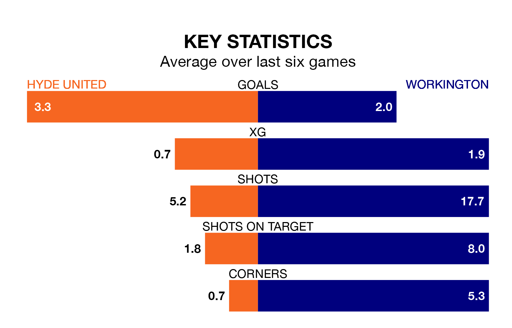

Hyde United host Workington at Ewen Fields on Saturday on the back of four consecutive wins in Northern Premier League.
Hyde have picked up 14 points from their last six games, and they face a Workington side who have lost their last two matches, and collected six points from the last possible 18.
With 56 goals in 28 games so far this season, Hyde are the league's joint-third-highest scorers with 2.0 goals per game. And they are conceding fewer than average, letting in 32 goals at a rate of 1.1 per game.
Workington are also above average scorers, with 1.9 goals per game, compared to a league average of 1.7. They have conceded 2.1 goals per game.
United are third in the table after 28 games, of which they have won 15 and drawn six, earning 51 points.
The visitors are 11 places behind the home side in 14th, with eight wins and 10 draws putting them on 34 points.
Hyde's last match was on January 27, a 5-1 win against Morpeth Town.
Workington drew 0-0 with Whitby Town last time out, also on January 27.
Updated: 10:40 (UTC), 01/02/24